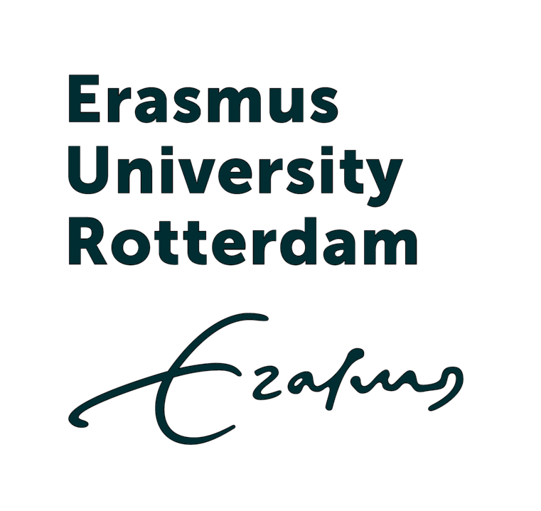

Dr. Rajashekarreddy
Konduru
Senior education and business leader with 20+ years building and scaling profitable executive, professional, and higher-education businesses at Great Lakes, ISB, and AMA. PhD in Organizational Behavior from Rotterdam School of Management, Erasmus University.
Strategy & portfolioTranslate institutional ambition into a commercially coherent executive-learning portfolio.
About Me
I build and scale profitable education businesses — and the operating systems that keep them growing. Over 20+ years across Great Lakes, ISB, and AMA, I have turned executive-education centres into high-growth businesses: 250% revenue growth at Great Lakes, ~200% year-over-year growth at ISB, 32+ corporate partnerships at 85% retention, and a 300% rise in B2B nominations.
I own the full P&L — strategy, portfolio, pricing, business development, marketing, delivery, and digital transformation — and have influenced $7.5M in operational savings along the way. I hold a PhD in Organizational Behavior from Rotterdam School of Management, Erasmus University, and maintain a 200+ CXO and CHRO network across India.
My work bridges academic credibility with commercial muscle. I created Executive Education OS, an end-to-end platform that lets an institution launch and run an exec-ed business from lead to enrolment to delivery to analytics.

POPhD, Organizational Behavior
Rotterdam School of Management, Erasmus University (2020–2023)
Global Advanced Management Programme (GAMP)
ISB / Kellogg School of Management, Northwestern University (2018)
 MG
MGMBA, General Management
University of Huddersfield, UK (2007–2009) · Sir Patrick Stewart Scholarship
What I Do
Executive Education Design
Architect custom B2B corporate academies, open-enrolment programmes, Executive MBA, and certificate formats from strategy through delivery and impact measurement.
P&L & Business Strategy
Own full P&L accountability for education centres: portfolio innovation, pricing, GTM, BD, marketing, operations, and digital transformation.
Digital Transformation
Deploy CRM/MarTech, LXP/LMS, RPA, and low-code automation to build scalable lead-to-enrolment-to-delivery operating systems.
Leadership Coaching & Facilitation
ICF-accredited coach delivering 160+ hours of executive sessions on innovation, strategy, AI business applications, and high-performance culture.
Evidence, not claims
Three operating challenges, each approached through commercial clarity, a usable delivery system, and measurable institutional outcomes.
The operating problem was not simply to sell more programmes. It was to align portfolio choices, market segmentation, corporate-account development, and delivery accountability around an economic model that could scale.
Intervention
- Owned the Executive Education Centre P&L and redesigned the portfolio around market demand.
- Built new corporate partnerships across PSU, manufacturing, and BFSI.
- Strengthened programme and account-management rhythms across a 15-member organisation.
Measured outcome
Delivered 250% revenue growth in three years, built 32+ corporate partnerships at 85% retention, and doubled B2B nominations for the Executive MBA.
Executive education breaks when lead generation, enrolment, programme delivery, faculty coordination, and analytics are each managed as a separate workflow. The remedy is an operating system, not another dashboard.
Intervention
- Led digital customer-experience transformation and connected process improvements to commercial and operational decisions.
- Built the Executive Education OS: a hosted portal, process playbook, and learning-experience platform spanning lead-to-enrolment-to-delivery.
- Applied AI business applications, CRM/MarTech, LXP/LMS, RPA, and low-code automation where they improved execution.
Measured outcome
The ISB transformation contributed to $7.5M in operational savings while creating a more repeatable basis for programme growth and delivery.
Learning has value only when it improves readiness, performance, and the organisation's ability to execute. This engagement focused on making capability work visible to the business rather than treating it as an HR service.
Intervention
- Managed learning and development for 750+ analytics and KPO associates.
- Created competency frameworks and client-aligned capability roadmaps.
- Digitised training delivery and partnered with business leaders on organisation-effectiveness initiatives.
Measured outcome
Digitisation created approximately Rs 2 crore in savings, while the broader capability model supported faster, more consistent contribution across the workforce.
Where I've Worked
Director, Executive Education
Own the Executive Education Centre P&L; delivered 250% revenue growth in three years through portfolio innovation, market segmentation, and new corporate accounts.
- Lead a 15-member organisation across sales, operations, and programme management
- Built 32+ corporate partnerships at 85% retention across PSU, manufacturing, and BFSI
- Redesigned Executive MBA, doubling B2B nominations
- Supported AICTE, NBA, AMBA, and AACSB accreditation
- Built and deployed “Executive Education OS”
Executive Director, Executive Education Operations
Provided COO-level leadership across learning solutions, marketing, sales, client engagement, and delivery for a digital and in-person executive-education portfolio.
- Built growth plans and centre-development frameworks
- Established replicable structures for programme incubation and team accountability
Associate Director, Executive Education
Held P&L for custom executive education; delivered ~200% year-over-year revenue growth through account development and portfolio redesign.
- Scaled ISB-Kellogg GAMP cohort 35→60 (150% revenue growth)
- Grew B2B nominations 300% through consultative selling
- Led digital CX transformation contributing to $7.5M operational savings
Senior Manager, Learning & Development
Managed L&D for 750+ analytics/KPO associates — budgets, competency frameworks, and client-aligned capability roadmaps.
- Digitised training delivery for ~Rs 2 crore savings
- Partnered with business leaders on organisational-effectiveness initiatives
Consultant (Freelance)
Advised Fortune 500 clients on process transformation and learning design across multicultural environments.
- Designed and delivered 50+ programmes using structured learning design frameworks
 DI
DITraining & Development Manager
Led L&D operations for multi-location teams; reduced new-hire ramp time by 28% through revamped curriculum.
- Manila site-launch specialist and Dell Master Trainer
- Awards: Best Training Manager and Customer Advocate
Founder & Managing Director
Founded and led an IT services start-up to 56% first-year profitability, quadrupling the client base.
- Managed operations, sales, marketing, and full P&L
- Delivered Karnataka government digitisation project across 13 kiosks
Great Lakes Institute of Management · Chennai
Own the Executive Education Centre P&L; delivered 250% revenue growth in three years through portfolio innovation, market segmentation, and new corporate accounts.
Key Highlights
- Lead a 15-member organisation across sales, operations, and programme management
- Built 32+ corporate partnerships at 85% retention across PSU, manufacturing, and BFSI
- Redesigned Executive MBA, doubling B2B nominations
- Supported AICTE, NBA, AMBA, and AACSB accreditation
- Built and deployed “Executive Education OS”
Ahmedabad Management Association (AMA) · Ahmedabad
Provided COO-level leadership across learning solutions, marketing, sales, client engagement, and delivery for a digital and in-person executive-education portfolio.
Key Highlights
- Built growth plans and centre-development frameworks
- Established replicable structures for programme incubation and team accountability
Indian School of Business (ISB) · Hyderabad
Held P&L for custom executive education; delivered ~200% year-over-year revenue growth through account development and portfolio redesign.
Key Highlights
- Scaled ISB-Kellogg GAMP cohort 35→60 (150% revenue growth)
- Grew B2B nominations 300% through consultative selling
- Led digital CX transformation contributing to $7.5M operational savings
Tata Consultancy Services (TCS) · Bengaluru
Managed L&D for 750+ analytics/KPO associates — budgets, competency frameworks, and client-aligned capability roadmaps.
Key Highlights
- Digitised training delivery for ~Rs 2 crore savings
- Partnered with business leaders on organisational-effectiveness initiatives
Bermudez Consulting · Bengaluru
Advised Fortune 500 clients on process transformation and learning design across multicultural environments.
Key Highlights
- Designed and delivered 50+ programmes using structured learning design frameworks
DIDell International Services · Bengaluru
Led L&D operations for multi-location teams; reduced new-hire ramp time by 28% through revamped curriculum.
Key Highlights
- Manila site-launch specialist and Dell Master Trainer
- Awards: Best Training Manager and Customer Advocate
DotIn Computer Services · Bengaluru
Founded and led an IT services start-up to 56% first-year profitability, quadrupling the client base.
Key Highlights
- Managed operations, sales, marketing, and full P&L
- Delivered Karnataka government digitisation project across 13 kiosks
Education & Research
PhD, Organizational Behavior
Rotterdam School of Management, Erasmus University (2020–2023)
Global Advanced Management Programme (GAMP)
ISB / Kellogg School of Management, Northwestern University (2018)
MGMBA, General Management
University of Huddersfield, UK (2007–2009) · Sir Patrick Stewart Scholarship
B.Sc. Electronics & Mathematics
Bangalore University (1999–2001)
Graduate Diploma (GNIIT), Computer Science
NIIT (1999–2002)
Rotterdam School of Management, Erasmus University (2020–2023)
ISB / Kellogg School of Management, Northwestern University (2018)
MGUniversity of Huddersfield, UK (2007–2009) · Sir Patrick Stewart Scholarship
Bangalore University (1999–2001)
NIIT (1999–2002)
Skills & Expertise
Select Publications
When Prestige Replaces Proof: Institutional Logics and Evidence Disclosure in Executive Education
Working Paper / Under Review · 2024
Analyzes 278 flagship leadership programs to explain why public outcome-evidence disclosure varies across academic institutions, consultancies, and training firms. Finds that market-logic providers ou…
From Role Perception to Program Choice: How Psychological Distance and Power Shape Evidence-Based Leadership Development Decisions in HR
Working Paper · 2024
Multi-method investigation of 349 HR professionals examining how HR role orientations influence leadership-development program selection through psychological distance, competence, and evidence-based …
Negentropic Entrepreneurship: Digital Sovereignty Through Local Transindividuation Circuits
Conference Submission / Working Paper · 2024
Interrogates the ideology of disruptive innovation through digital infrastructure in post-colonial contexts, proposing a negentropic alternative centered on transindividuation circuits and local digit…
Analyzes 278 flagship leadership programs to explain why public outcome-evidence disclosure varies across academic institutions, consultancies, and training firms. Finds that market-logic providers outdisclose academic-logic providers, and logic multiplicity predicts dramatically higher transparency.
Multi-method investigation of 349 HR professionals examining how HR role orientations influence leadership-development program selection through psychological distance, competence, and evidence-based management thinking.
Interrogates the ideology of disruptive innovation through digital infrastructure in post-colonial contexts, proposing a negentropic alternative centered on transindividuation circuits and local digital sovereignty.
Signature Projects
Executive Education OS
End-to-end operating platform for exec-ed businesses
A hosted portal + process playbook + full Learning Experience Platform (LXP) spanning lead generation, enrolment, delivery, faculty and operations management, and analytics. Engineered for rapid, low-cost deployment across institutions.
CII-IWN LeadHership Program
Strategic partnership with CII Indian Women Network
Immersive multi-day programme designed to cultivate women leaders for operational and P&L roles. Built a cross-industry network of 30+ women leaders from manufacturing, pharma, BFSI, and technology sectors.
Live Platforms & Ventures
 EO
EOExecEd OS
www.execedos.com
Executive Education Operating System — the platform for running exec-ed businesses end-to-end.
 X
XXedos
www.xedos.co.in
India-focused executive education delivery and operations platform.
ExecEd OS Online
www.execedos.online
Online portal for the Executive Education OS ecosystem.
Evlyr
www.evlyr.com
Learning experience and engagement platform.
KaryaFlow
www.karyaflow.com
Workflow and productivity solution for knowledge work.
A hosted portal + process playbook + full Learning Experience Platform (LXP) spanning lead generation, enrolment, delivery, faculty and operations management, and analytics. Engineered for rapid, low-cost deployment across institutions.
Immersive multi-day programme designed to cultivate women leaders for operational and P&L roles. Built a cross-industry network of 30+ women leaders from manufacturing, pharma, BFSI, and technology sectors.
EOExecutive Education Operating System — the platform for running exec-ed businesses end-to-end.
XIndia-focused executive education delivery and operations platform.
Online portal for the Executive Education OS ecosystem.
Learning experience and engagement platform.
Workflow and productivity solution for knowledge work.
Case Studies & Case-lets
Building the Next Generation of Women Leaders for Indian Industry
CII-IWN × Great Lakes Executive Education
Strategic partnership launching the LeadHership programme to equip high-potential women with integrated operational, financial, and strategic acumen. Created a 30+ leader pan-India network across Kosh Innovations, Trane Technologies, Pfizer, Lenovo, Rane Madras, and others.
Titan Case Study
Great Lakes Executive Education
Custom executive education case developed for Titan. Details available on request.
Strategic partnership launching the LeadHership programme to equip high-potential women with integrated operational, financial, and strategic acumen. Created a 30+ leader pan-India network across Kosh Innovations, Trane Technologies, Pfizer, Lenovo, Rane Madras, and others.
Custom executive education case developed for Titan. Details available on request.
Repositories

Interactive Simulations
Interactive business and leadership simulations for executive education are being curated and will be published here.
Interactive business and leadership simulations for executive education are being curated and will be published here.
Have simulations to share? Send details to k.rajashekarreddy@gmail.com
Books
Published and in-progress books will be listed here. Please share titles and details to populate this section.
Published and in-progress books will be listed here. Please share titles and details to populate this section.
Have a book to feature? Send details to k.rajashekarreddy@gmail.com
Book Chapters
Contributions to edited volumes and handbooks will appear here.
Contributions to edited volumes and handbooks will appear here.
Have a chapter to feature? Send details to k.rajashekarreddy@gmail.com
News Paper Articles
Selected newspaper articles, opinion pieces, and editorials will be added here.
Selected newspaper articles, opinion pieces, and editorials will be added here.
Have articles to share? Send links to k.rajashekarreddy@gmail.com
Media Prints
Interviews, features, podcasts, and media coverage will be listed here.
Interviews, features, podcasts, and media coverage will be listed here.
Have media coverage to share? Send links to k.rajashekarreddy@gmail.com
Conferences Attended & Presented
A curated list of conferences attended, papers presented, and keynote sessions is being compiled.
A curated list of conferences attended, papers presented, and keynote sessions is being compiled.
Have conference details to share? Send to k.rajashekarreddy@gmail.com
Awards & Recognition
Great Lakes Outstanding Leadership recognition
Great Lakes Institute of Management
ISB Outstanding Performer
Indian School of Business
DIDell Best Training (Transition) Manager
Dell Inc
DIDell Customer Advocate Award
Dell Inc
DIDell Master Trainer Certification
Dell Inc
Best L&D Facilitator Award
Tata Consultancy Services
UOSir Patrick Stewart Scholarship (MBA)
University of Huddersfield
Great Lakes Institute of Management
Awarded in recognition of outstanding contribution and excellence.
Indian School of Business
Awarded in recognition of outstanding contribution and excellence.
DIDell Inc
Awarded in recognition of outstanding contribution and excellence.
DIDell Inc
Awarded in recognition of outstanding contribution and excellence.
DIDell Inc
Awarded in recognition of outstanding contribution and excellence.
Tata Consultancy Services
Awarded in recognition of outstanding contribution and excellence.
UOUniversity of Huddersfield
Awarded in recognition of outstanding contribution and excellence.
Writing & Thinking
Rejection hurts. That's not a feeling; it's a neurological fact. fMRI studies show that social rejection activates the same brain regions as physical pain. Your brain literally processes "we're going with someone else" the same way it processes a broken bone.
Yet in organizations, we obsessively track revenue, retention, NPS, and churn — while completely ignoring the one metric that actually predicts long-term leadership success: the Rejection Quotient (RQ).
What Is RQ?
Your Rejection Quotient measures how quickly you bounce back from a "no" and how many rejections you process per unit of time. High-RQ leaders don't avoid rejection — they seek it. They understand that every "no" is data, and every rejection is tuition for growth.
The Neuroscience
When you experience rejection, your anterior cingulate cortex lights up — the same region that processes physical distress. This is why rejection feels physically painful. But here's what's fascinating: repeated exposure to rejection, when processed correctly, actually builds neural pathways for resilience. You literally get better at handling it.
Building Your RQ
- 1. Detach outcome from identity. A rejected proposal isn't a rejected person. Separate the event from your self-worth.
- 2. Track your "no" count. Set a rejection goal, not just a success goal. Aim for 10 rejections a month.
- 3. Debrief, don't dwell. Five minutes of structured analysis: what happened, what worked, what to try differently. Then move forward.
- 4. Celebrate the ask. Every pitch, every proposal, every bold conversation is a victory — regardless of the outcome.
- 5. Create a rejection team. Share your rejections with trusted peers who normalize the experience and help you reframe.
The leaders I've seen rise fastest aren't the ones who hear "yes" most often. They're the ones who hear "no" and keep moving — faster and smarter each time.
We've all been there. A key team member misses a deadline. A project drifts off course. And the immediate response is to tighten control, add checkpoints, and make sure "someone owns it."
But what if the problem isn't a lack of ownership — but the wrong kind?
The Paradox
In most organizations, ownership comes bundled with expectation. "You own this, so I expect these results by this date." That sounds reasonable. But the moment expectation enters the room, so does fear. Fear of judgment. Fear of failure. Fear of letting someone down.
And fear, despite its reputation, is a terrible motivator. It produces compliance, not commitment. It drives people to hide problems, protect reputations, and optimize for looking good rather than doing good.
The counterintuitive alternative: give ownership without expectation.
Zero Expectations, Total Ownership
When you hand someone true ownership — "this is yours, I trust your judgment, and I'm here as a resource" — something remarkable happens. The psychological contract shifts from performance anxiety to creative responsibility.
People stop asking "Will this get me in trouble?" and start asking "What would make this exceptional?"
This isn't abdication. It's the highest form of leadership clarity. You define the mission, the standards, and the boundaries. Then you get out of the way.
What It Looks Like
- 1. Assign the outcome, not the method. "We need this customer cohort to renew at 90%" is ownership. "Send three emails and make two calls" is micromanagement.
- 2. Make failure safe. If people know they won't be punished for honest mistakes, they'll take the risks that produce breakthroughs.
- 3. Remove the performance theater. Stop requiring detailed justifications for every decision. Trust the judgment you hired.
- 4. Celebrate the process, not just the result. When effort, learning, and courage are recognized, people stop gaming the scoreboard.
The Payoff
Teams that operate this way move faster, think deeper, and stay longer. They don't need constant oversight because the work itself becomes the source of motivation.
The ownership paradox is simple but hard: the less you expect, the more people deliver. Not because expectations disappear, but because ownership finally has room to breathe.
Hate the idea of "selling?" Good. As a leader, I've always taken pride in being immune to sales tactics. I don't want to be persuaded; I want to be informed. I don't want to be pushed; I want to be understood.
And yet, every day, I sell. We all do.
We sell ideas to stakeholders. We sell vision to teams. We sell change to organizations. The question isn't whether you sell. The question is whether your selling feels like selling.
The Invisible Sell
The most powerful influence doesn't feel like influence at all. It feels like service. Like clarity. Like someone finally understood what you needed before you could fully articulate it yourself.
This is the invisible sell. It happens when the other person's interest and your interest are so aligned that the decision becomes obvious.
Why Traditional Persuasion Fails
Traditional selling creates resistance. The moment someone senses they're being sold to, their defenses rise. They start evaluating, comparing, looking for the catch. The interaction becomes transactional.
Effortless influence works differently. It removes friction instead of adding pressure. It answers unspoken questions. It makes the next step feel like the natural next step.
The Three Levers
- 1. Diagnose before prescribing. Most people pitch solutions before they understand the problem. Spend 80% of your time understanding and 20% offering direction.
- 2. Make the status quo uncomfortable. Not through fear, but through clarity. Help people see the real cost of inaction in their own terms.
- 3. Co-create the conclusion. People support what they help create. Instead of delivering a fully formed idea, build it with them in the room.
In Practice
Whether you're launching a new L&D initiative, proposing a strategic shift, or asking a team to change how they work, the principle is the same: make the right choice feel inevitable.
When influence is invisible, people don't feel persuaded. They feel seen. And that's the sell that lasts.
Every failed New Year's resolution, every missed quarterly target, every abandoned ambition has one thing in common: a focus on goals instead of systems.
We've been sold the dangerous myth that successful people set clear goals and pursue them relentlessly. But the data tells a completely different story. High achievers don't obsess over the finish line — they design the track.
Goals vs. Systems
A goal is a destination. "Increase revenue by 30%." "Lose 15 pounds." "Write a book." Goals are finite. They exist in the future. And critically, every day you haven't achieved your goal is a day you've "failed."
A system is the engine that runs regardless. "Make five client calls every morning." "Eat a protein-rich breakfast." "Write 500 words before checking email." Systems exist in the present. They don't judge — they just run.
The Trap
When you focus exclusively on goals, you spend most of your time in a state of failure. The goal hasn't been achieved yet. Every checkpoint is a reminder of what's missing. The gap between where you are and where you want to be creates constant psychological friction.
When you focus on systems, every day is a win. Did you follow the system today? Then today was successful. The outcomes take care of themselves when the engine is running.
What To Do
- 1. Identify the outcome you want.
- 2. Immediately convert it into a repeatable behavior. Don't spend another minute visualizing the goal. Design the daily action.
- 3. Track the behavior, not the result. Did you do the thing? Yes? Success.
- 4. Adjust the system when results deviate. If three months of system-following hasn't moved the needle, tweak the system — not the goal.
The organizations I've transformed didn't change because we set bolder goals. They changed because we built better systems. The same applies to leadership, teams, careers, and life.
"He's such a nice guy." In the world of leadership, that's one of the most common — and most dangerous — compliments you can receive.
Nice isn't the same as kind. Nice avoids conflict. Kindness moves people forward. Nice protects feelings in the moment. Kindness protects people over time. Nice says what you want to hear. Kindness says what you need to hear.
And too many leaders fall into the kindness trap: confusing politeness with care, and silence with support.
The Cost of Nice
When leaders prioritize being liked over being clear, several things happen:
- - Standards erode. High performers watch mediocrity go unaddressed and wonder why they bother.
- - Feedback disappears. People stop getting the information they need to improve.
- - Conflict goes underground. Resentment builds. Politics replace performance.
- - The best people leave. Top talent doesn't need a nice boss. They need a leader who helps them grow.
The Kindness Shift
Kind leadership is direct, honest, and rooted in respect. It says: "I believe you can do better, and I'm going to tell you exactly what I see."
Kindness doesn't mean cruelty. It means clarity delivered with care. It means setting expectations, holding people to them, and supporting them in meeting those expectations.
How to Escape the Trap
- 1. Separate the person from the behavior. Criticize actions, not identity.
- 2. Be specific. Vague praise and vague criticism are both useless. Name the behavior and its impact.
- 3. Make it a conversation, not a verdict. Ask questions. Listen. Then decide together what happens next.
- 4. Follow through. Feedback without consequences is just noise.
The Real Compliment
The leaders I respect most aren't always the most liked in the moment. But they're the ones people thank years later — because they were kind enough to be honest.
Don't be a nice leader. Be a kind one.
"I don't have enough time." It's the default response for almost every leader I meet. And it's almost always the wrong diagnosis.
The problem isn't time. We all have the same 24 hours. The problem is energy — how we generate it, how we spend it, and how foolishly we try to conserve it.
The Paradox
Most leaders treat energy like a finite resource to be hoarded. They cancel meetings, delay decisions, and avoid commitments in an attempt to "protect their time." But energy doesn't work like a bank account. It works like a muscle: the more you use it well, the more you have.
The leaders with the most energy aren't the ones doing the least. They're the ones doing the right things with the right people — and finding that the act itself creates more energy.
Where Energy Comes From
- 1. Meaningful work. Energy follows purpose. If your day is full of tasks that don't matter, no amount of rest will restore you.
- 2. Real relationships. Transactional interactions drain. Generous, human connections refill the tank.
- 3. Momentum. Starting is hard; continuing is easier. Small wins generate the energy for bigger ones.
- 4. Physical foundation. Sleep, movement, and nutrition aren't wellness perks. They're performance infrastructure.
Give It Away
The fastest way to get more energy is to spend it on things that matter. Mentor someone. Take on a challenge that scares you. Have the hard conversation you've been avoiding. Invest in a relationship.
Every time you act from generosity and courage, you prove to yourself that you have more capacity than you thought. That proof becomes fuel.
The Reframe
Stop asking "How can I do less?" Start asking "How can I spend my energy where it multiplies?"
Time is fixed. Energy is expandable. Master the second, and the first stops feeling so scarce.
Rock bottom. It's a phrase we dread, a place we avoid at all costs. And yet, for many leaders, it's precisely where the most valuable education begins.
I don't mean failure in the sanitized, conference-stage sense — "I failed forward!" I mean real failure. Lost revenue. A program that collapsed. A team that fell apart. A judgment call that backfired.
Those moments hurt. They also teach things that success never could.
The Failure Dividend
Every significant failure pays a dividend if you're willing to collect it. The dividend isn't the pain. It's the clarity that comes after the pain.
Failure strips away illusions. It reveals assumptions you didn't know you were making. It exposes weaknesses in your systems, your team, and yourself. And it forces you to ask questions that success lets you avoid.
What Failure Teaches
- 1. Your real priorities. When resources are tight, you learn what actually matters.
- 2. Your team's character. Crisis reveals who steps up, who disappears, and who needs support.
- 3. Your own patterns. Failure is a mirror. It shows you how you avoid, blame, rush, or overcomplicate.
- 4. The difference between ego and identity. A failed initiative is not a failed life. The faster you separate the two, the faster you recover.
Collecting the Dividend
The leaders who grow from failure do three things differently:
- - They face it quickly. No rationalization, no scapegoating. Just honest assessment.
- - They extract the lesson. What will we do differently next time? What signal did we miss?
- - They apply it publicly. They share what they learned, creating a culture where failure is data, not shame.
The Best Education
Some of my most important leadership lessons didn't come from MBA cases or executive programs. They came from years where nothing went according to plan.
If you're in a hard season right now, here's the truth: your worst year may be your best education. The dividend is there. Your job is to collect it.
We've been sold a dangerous lie: that grit is always a virtue and quitting is always a weakness. "Never give up." "Winners never quit." But in a world of limited resources — time, attention, capital, energy — the ability to quit strategically might be your most valuable leadership skill.
The Sunk Cost Fallacy in Leadership
Walk through any organization and ask: "How many failing initiatives are still running because someone said 'we've already invested too much to stop now'?"
That's not commitment. That's the sunk cost fallacy wearing a leadership costume. And it's burning through your organization's most precious resources right now.
The best leaders I've worked with share a common trait: they kill projects early and often. They don't wait for quarterly reviews. They don't hope things improve. They look at the data, trust their judgment, and pull the plug — redirecting resources to higher-impact work.
When to Quit
- 1. The data has a clear trend. Three months of flat or declining metrics isn't a plateau — it's a signal.
- 2. You're the only champion. If nobody else believes in it, your passion isn't leadership — it's delusion.
- 3. The opportunity cost is rising. Every hour spent on a losing initiative is an hour stolen from a potential winner.
- 4. You've learned what you can. Some projects exist to teach you something, not to succeed. Take the learning and move on.
The Quitter's Edge
Quitting isn't failure. It's resource reallocation. The organizations that win aren't the ones that never quit — they're the ones that quit the right things at the right time, freeing up resources for what actually matters.
In my career spanning TCS, Dell, ISB, and Great Lakes, some of my best decisions weren't the projects I started. They were the ones I had the courage to stop — so we could start something better.
The modern executive playbook is clear: optimize your calendar, guard your time, and ruthlessly prioritize high-ROI activities. Efficiency is king. Visibility is currency. And if it can't be measured on a dashboard, it barely counts.
But after two decades of building education businesses and leading L&D transformations, I've come to believe that some of the highest-ROI work a leader does is the work nobody sees.
The Unseen Work
Unseen work is the coaching conversation after a tough meeting. It's the quiet revision of a strategy document at 10 PM. It's the time spent building trust with someone who doesn't report to you. It's the patient explanation, the handwritten note, the extra cycle of feedback that no one requested.
This work rarely appears on quarterly reviews. It doesn't generate applause on all-hands calls. But it compounds. It shapes culture, retains talent, and prevents the crises that otherwise consume leadership bandwidth.
Why It's Inconvenient
Unseen work is inconvenient because it doesn't fit neatly into productivity systems. You can't batch it. You can't automate it. It often happens in the margins of your day, when your energy is lowest and the temptation to defer is highest.
It also carries no immediate reward. The payoff might be months or years away. And in a world obsessed with visible output, that delay makes the work feel optional.
The ROI
The return on unseen work isn't linear. It's exponential. One trusted relationship prevents a resignation. One honest conversation redirects a failing project. One act of care creates loyalty that outlasts any compensation strategy.
The leaders who build durable organizations aren't the ones who optimize every minute. They're the ones who do the inconvenient work when no one is watching.
A Different Scorecard
If your calendar only rewards visible work, you're probably underinvesting in what matters most. Build space for the unseen. Protect it. And trust that the ROI will show up — not always on a spreadsheet, but in the strength of the organization you leave behind.
You know the feeling. The new project. The clean slate. The surge of energy and hope. Everything feels possible because nothing has gone wrong yet.
Starting is intoxicating. Finishing is hard. And the gap between the two is where most careers and companies get stuck.
The Starting Trap
We glorify beginnings. New initiatives. New roles. New years. New resolutions. Beginnings are full of possibility and free from evidence. They don't yet require us to confront our limitations.
But starting is cheap. Everyone can start. The real differentiator — in leadership, in business, in life — is the ability to finish when the romance is gone.
The Boring Middle
The middle is where the work becomes invisible. The initial vision has faded. The obstacles are real. Progress is slow. The novelty has been replaced by repetition.
This is the phase most people quit. And it's precisely why finishing is so valuable — because most of your competition won't.
The Finisher's Mindset
- 1. Fall in love with the process, not the promise. Outcomes are uncertain. The daily action is within your control.
- 2. Measure progress, not inspiration. On hard days, doing the work is the win.
- 3. Protect momentum ruthlessly. One missed day becomes two. Two becomes a week. Finishers know the cost of interruption.
- 4. Make it smaller. When a project feels overwhelming, reduce the next step until it's unavoidable.
Why Boring Wins
In a world addicted to novelty, the ability to see something through is a genuine superpower. The organizations that win aren't always the most innovative. They're the ones that execute relentlessly on the basics — until the basics become a competitive advantage.
Brilliance isn't starting well. It's finishing when no one is watching.
Be a finisher.
What People Say
Thesis & Research Interests
PhD Dissertation
Rotterdam School of Management · 2020–2023
"Transparency Dynamics in Executive Education Markets: An Institutional Theory Perspective"
Rotterdam School of Management, Erasmus University
An institutional-theory perspective on why and how executive-education providers differ in their disclosure of outcome evidence — examining the tension between academic, market, and hybrid institutional logics across 278 flagship leadership programmes.
Research Interests
- Leadership Development Effectiveness
- Evidence-Based Management in HR
- Transparency in Professional Education Markets
- Industry-Academia Partnership Models
- Pedagogical Innovation & Digital Transformation
Get in Touch
Open to Dean, Director, CEO, or Business Head mandates in education and EdTech — ideally based in Bengaluru. If you are building or scaling an institution, let’s talk.